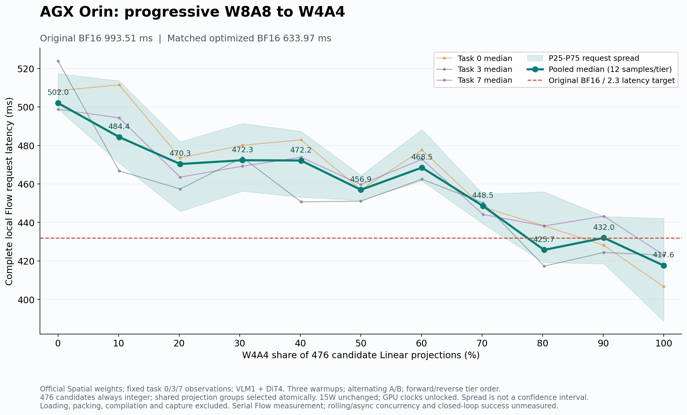
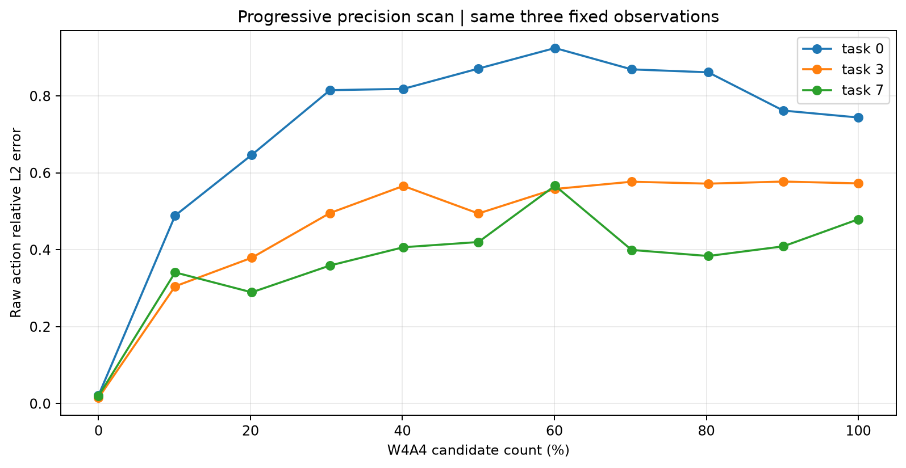
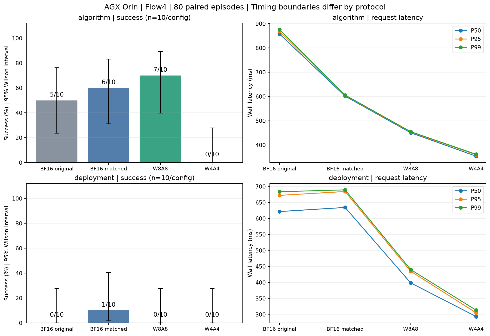
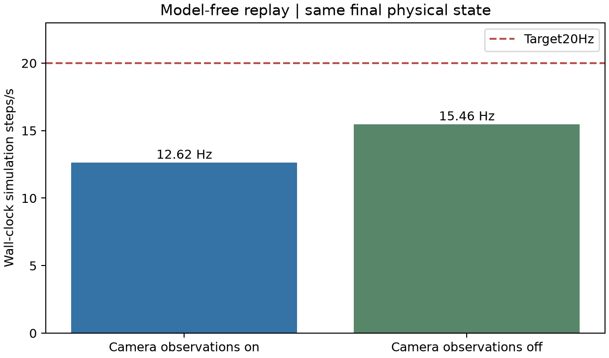
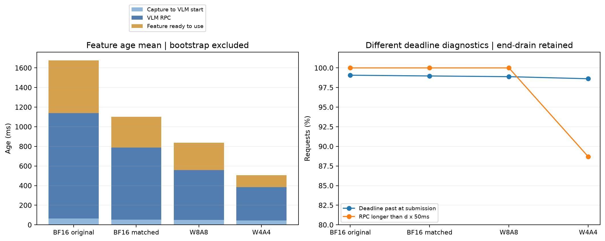

固定观测扫描：全 INT8 为 502.01 ms、全 INT4 为 417.61 ms，相对原始 BF16 分别 1.98×、2.38×。闭环：algorithm 成功数为 BF16 5/10、优化 BF16 6/10、INT8 7/10、INT4 0/10；deployment 为 0/10、1/10、0/10、0/10。原生 BF16：10/10 成功。因此速度目标在本次扫描窗口达到，但 INT4 质量未通过。
Jetson AGX Orin（SM87），15W 模式，DVFS 未锁；Torch 2.8 / CUDA 12.6 / Triton 3.4 / Flash Attention 2.8.2。源码 HEAD 11d9ddb6da0087ba9404850033646a43cf8045c2，保留既有工作区改动。官方 GR00T-N1.7-LIBERO/libero_spatial 权重，revision 2ea293aa20ba7cf5bbf3ba17a5fbcb1a01cbfe21，每次完整请求 VLM 1 次 + Flow DiT 4 次。
全量量化指 476 个候选投影：469 个 Linear + 7 个 category=2 投影，VLM 和动作头均覆盖；非候选保持 BF16。INT4 使用 alpha=0.5、task0 校准、256 线程打包和已有形状 tactic。原始 BF16 无融合/Graph；优化 BF16 与量化档共享已有 BF16 融合、完整视觉 Graph、16 个文本 block Graph 和 DiT Graph。加载、编译、打包、预热及 Graph 捕获不计入稳定延迟。
固定真实观测 task0/3/7、初始状态0、seed1000/4000/8000。按固定累计顺序逐层从 W8A8 切换 W4A4，未切换候选仍是 W8A8。11 档正序再逆序，每档12个稳定样本；原始 BF16 144个锚点、优化 BF16 12个样本。计时是本地串行完整请求，包含输入处理和动作解码，不含通信、控制队列或仿真推进。
| 组别 | W4 / W8 / BF16 候选数 | W4数量占比 | 请求中位 ms | 相对原始BF16 × | 量化增量 × |
|---|---|---|---|---|---|
| 原始 BF16 | 0 / 0 / 476 | — | 993.51 | 1.000 | — |
| 优化 BF16 | 0 / 0 / 476 | — | 633.97 | 1.567 | 1.000 |
| tier00 | 0 / 476 / 0 | 0.00% | 502.01 | 1.979 | 1.263 |
| tier01 | 48 / 428 / 0 | 10.08% | 484.38 | 2.051 | 1.309 |
| tier02 | 96 / 380 / 0 | 20.17% | 470.35 | 2.112 | 1.348 |
| tier03 | 145 / 331 / 0 | 30.46% | 472.32 | 2.103 | 1.342 |
| tier04 | 191 / 285 / 0 | 40.13% | 472.16 | 2.104 | 1.343 |
| tier05 | 238 / 238 / 0 | 50.00% | 456.95 | 2.174 | 1.387 |
| tier06 | 286 / 190 / 0 | 60.08% | 468.48 | 2.121 | 1.353 |
| tier07 | 334 / 142 / 0 | 70.17% | 448.50 | 2.215 | 1.414 |
| tier08 | 382 / 94 / 0 | 80.25% | 425.72 | 2.334 | 1.489 |
| tier09 | 429 / 47 / 0 | 90.13% | 431.99 | 2.300 | 1.468 |
| tier10 | 476 / 0 / 0 | 100.00% | 417.61 | 2.379 | 1.518 |


全 INT8 三输入动作相对 L2 为 0.0210 / 0.0146 / 0.0195；全 INT4 为 0.7437 / 0.5724 / 0.4790。INT4 误差在视觉编码前两层开始放大。曲线不严格单调，且 DVFS 未锁；独立扫描前 A/B 的 INT4 仅2.295×，不能保证任何运行窗口都达到2.3×。
两种协议分别测试4配置，每组全10个 Spatial 任务、初始状态0各1回合，seed=1000+1000×task，最多720步，以 LIBERO check_success 计成功。80回合初始状态、场景、稳定物理状态及两路初始图像精确配对，时序不合格回合保留。
algorithm：物理步长50ms，固定视觉历史150ms、动作延迟50ms，每步重规划；计算等待不推进物理时间。请求延迟包含 VLM1+Flow4 完整 RPC。deployment：同一GPU上两个独立进程，异步 VLM + Flow4，目标20Hz，动作延迟自适应1–5步；动作延迟包含排队、特征安装、Flow4 RPC，VLM另测。它是 Flow，不是 rolling πR²；未证明 CUDA kernel 重叠。
| 协议 | 配置 | 成功/回合 | 动作 P50 / P95 / P99 ms | GPU elapsed P50 ms | 控制Hz中位 | VLM更新/s | 特征年龄P50 ms |
|---|---|---|---|---|---|---|---|
| algorithm | bf16_original | 5/10 | 857.48 / 868.41 / 875.80 | 849.50 | — | — | 150.00 |
| algorithm | bf16_matched | 6/10 | 601.19 / 604.29 / 605.69 | 592.16 | — | — | 150.00 |
| algorithm | w8a8 | 7/10 | 450.28 / 453.44 / 454.81 | 441.22 | — | — | 150.00 |
| algorithm | w4a4 | 0/10 | 353.40 / 359.45 / 361.35 | 344.47 | — | — | 150.00 |
| deployment | bf16_original | 0/10 | 621.43 / 672.05 / 683.35 | 610.65 | 10.06 | 0.93 | 1630.62 |
| deployment | bf16_matched | 1/10 | 634.26 / 684.06 / 689.31 | 614.51 | 10.65 | 1.35 | 1096.34 |
| deployment | w8a8 | 0/10 | 398.56 / 434.94 / 440.14 | 379.86 | 10.47 | 1.97 | 860.06 |
| deployment | w4a4 | 0/10 | 293.27 / 304.75 / 312.98 | 273.14 | 10.43 | 3.09 | 547.69 |

INT8 比优化 BF16 多成功1个任务，样本太少，不能声称量化提高质量。全部 deployment 配置严格20Hz合格回合均为0/10，绝对截止时间错过率均为100%；这不等于所有动作被丢弃。当前成功率仅代表本机实际时序，不能作为标准20Hz部署质量。
原生调用官方 Gr00tSimPolicyWrapper.get_action：新观测、4次DiT、无量化/融合/Graph、执行解码原始动作，不额外引入视觉或动作延迟。全10任务与上面 BF16 algorithm 的初始条件逐位配对。只比较每8步和每1步重新规划的执行方式。
| 组别 | 配置 | 成功/已完成回合 | 状态 |
|---|---|---|---|
| native8 | 原生BF16；每8步重规划；全10任务 | 10/10 | complete（10/10） |
| native1 | 原生BF16；每1步重规划；任务0/3/8 | 3/3 | complete（3/3） |
| reference_d1_v3 | 旧优化BF16参考；动作50ms / 视觉150ms / 每1步规划；任务0/3/8 | 2/3 | 已完成（复用主实验） |
| d1_v0 | 优化BF16；动作50ms / 视觉0ms / 每1步规划 | 3/3 | complete（3/3） |
| d5_v3 | 优化BF16；动作250ms / 视觉150ms / 每5步规划 | 1/3 | complete（3/3） |
| d5_v11 | 优化BF16；动作250ms / 视觉550ms / 每5步规划 | 0/3 | complete（3/3） |
| d1_v11 | 优化BF16；动作50ms / 视觉550ms / 每1步规划 | 0/2 | running（2/3） |
| cadence_d1_v3_h5 | 优化BF16；动作50ms / 视觉150ms / 每5步规划（独立延迟对照） | 尚无结果 | not_started（0/3） |
原生10/10说明同一权重和仿真环境具备成功能力；native1三任务也3/3，暂不支持“仅重规划频率导致失败”。新鲜视觉组3/3、较旧视觉组表现较差，提示时序因素值得继续查。d5同时改变动作延迟和重规划间隔，不能单独归因；保持每5步规划的独立延迟对照尚未完成。优化BF16原生/缓存入口的三个固定观测，经相同命令投影边界后输出逐位一致，不能据此保证所有轨迹等价。
| 渲染诊断 | 实测Hz | step P50 ms | 配置 |
|---|---|---|---|
| egl_cameras | 12.61 | 77.63 | 200个相同真实动作；无模型推理 |
| physics_only | 15.50 | 63.24 | 200个相同真实动作；无模型推理 |
| physics_only | 15.43 | 63.55 | 200个相同真实动作；无模型推理 |
| egl_cameras | 12.63 | 77.63 | 200个相同真实动作；无模型推理 |
相机开/关各两次，四组最终物理状态逐位一致。关闭相机仍只有约15.5Hz，渲染不是唯一超出50ms的来源；无视觉仅用于定位，不能作为可用策略部署。

| 配置 | 提交时截止时间已过 | RPC自身超出d×50ms | 平均视觉年龄 ms | 等待启动 / VLM / 特征等待使用 ms |
|---|---|---|---|---|
| bf16_original | 99.07% | 100.00% | 1675.97 | 64.35 / 1076.07 / 535.55 |
| bf16_matched | 98.97% | 100.00% | 1101.44 | 52.71 / 733.94 / 314.79 |
| w8a8 | 98.88% | 100.00% | 838.13 | 49.89 / 508.31 / 279.94 |
| w4a4 | 98.62% | 88.69% | 505.10 | 45.35 / 338.84 / 120.91 |

约99%的请求在提交时绝对截止时间已过，包含控制器累计落后；同时 INT8 的请求自身全部超过名义动作预算。INT8 平均视觉年龄约838ms，其中 VLM约508ms、完成特征等待使用约280ms、启动等待约50ms。频率不足、动作计算慢和视觉陈旧同时存在，尚不能量化各项对失败的独立贡献。
一并保存10月13日下午至晚间所有已有曲线、CSV、数值摘要和配置；不同测量组单独保留，不跨组相乘加速比。下表给出主要变化，其余每个模式的结果见 04_当日调优历史/全部调优组汇总.csv，各组原报告包含具体输入、Graph边界和未采用方案。
| 实验组 | 配置变化 | 完整请求中位结果 | 判断 |
|---|---|---|---|
| 固定精度初验 | 原始BF16 / 辅助BF16 / 全INT8 / 全INT4 | 948.49 / 807.60 / 821.98 / 772.30 ms | INT8慢于辅助BF16 |
| INT8 Graph | 为DiT使用Graph，候选全INT8 | 814.81 → 575.29 ms；同组原BF16 955.56 ms | 相对原始1.661×；相对Graph BF16 1.280× |
| INT4 Graph | 全候选INT4；DiT Graph | 760.80 → 490.48 ms；同组原BF16 962.56 ms | 请求明显变快；误差仍大 |
| 激活平衡与条件准备 | 原有融合量化 / 普通量化 / alpha平衡 / 条件分组 | 平衡及条件组未稳定胜出；全部数值保留CSV | 没有因局部误差下降宣称质量改善 |
| 准备与GEMM调优 | 保持舍入的寄存器准备 + 按形状tactic | 489.49 → 482.17 ms；同组原BF16 970.40 ms | 2.013×；倒数方案及局部alpha拟合未采用 |
| VLM分块Graph与复用 | INT4 DiT Graph → 40块VLM Graph → 缓冲复用 | 499.86 → 449.03 → 446.50 ms | 初版；视觉RoPE融合集成遗漏，已修正 |
| 修正版VLM Graph | 保留已安装的原生视觉RoPE | 467.25 → 428.08 ms；同组原BF16 970.78 ms | 2.268×；修复集成遗漏，不是新RoPE kernel |
| 完整视觉Graph | 旧40个VLM块Graph → 1视觉+16文本Graph | 445.48 → 428.84 ms；同组原BF16 984.32 ms | 约3.74%下降；2.295×，此窗口未达到2.3× |
| 当前渐进扫描 | 上述完整视觉Graph；0%→100%候选W4 | 502.01 → 417.61 ms；同组原BF16 993.51 ms | 端点1.979× / 2.379×；INT4闭环未通过 |
01：11档曲线、288条稳定样本、逐层精度映射和配置；02：80回合逐任务数据、全部动作/视觉请求CSV及配置；03：原生和时序诊断的逐任务数据、配置与部分完成状态；04：当日所有已有调优图与数据。本地 JSON/JSONL 已按要求移除，原始记录保留在 AGX。大权重、视频、原始Nsight trace、校准张量仍在AGX个人SD目录。
旧W4初始图像不匹配的一整组10回合在unpaired_attempts.csv单列，不纳入配对结果；其他30回合经过核验复用，来源保留。旧两次原生启动/预热失败发生在计分前，不计成功率。主评估因诊断有意暂停；本次只关闭Codex定时唤醒，未向GPU进程发送停止指令。报告结果固定于本快照，不会自动更新。